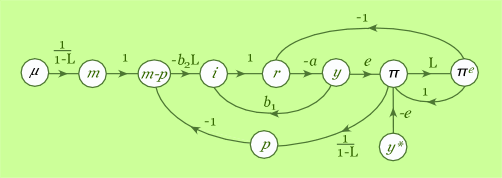
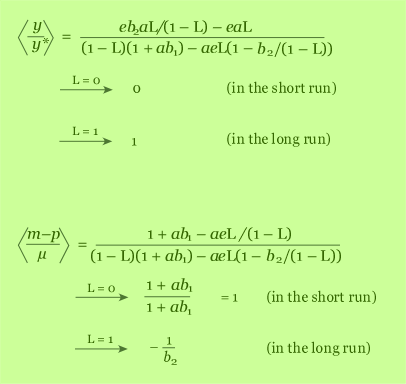

Macroeconomic models which deal with the accumulation of flows into stocks or with expectations about the future are inherently dynamic: they involve differential or difference equations. They are incorporated into a causal graph via an operator: the Laplace operator for continuous time or the lag operator for discrete time. Economic models are usually expressed in discrete time. Then the lag operator L is treated as an algebraic parameter and enters into the transmittances.
Consider a Phillips curve model as set out in these equations:
 π = πe + e(y - y*)
y = a0 - a(i - πe )
πe = Lπ
i = b1y - b2 L(m - p)
m = Lm + μ
where p is the price level, πe is the expected rate of inflation, y is output, y* is the natural level of output, i is the nominal interest rate, m is the stock of money and μ is its rate of growth. Variables p, y, y* and m are measured in logarithms. Both m and p are measured at the end of the period. The lag operator L simply lags the variable it is attached to, so Lm is mt-1; where it appears in the form (1-L)-1 it implies accumulation or time integration.
This simple model assumes that expected inflation is equal to the actual inflation rate in the previous period. It assumes μ and y* to be exogenous and we can ask e.g. how a (unit step) increase in μ or y* would affect any of the other, endogenous, variables.
Although there is sufficient information in this model to work out the full time path of effects, in fact the main ones of interest are "impact" or short-run effects and long-run effects. When we have the required transmittance as a function of L then the former are given by setting L = 0 and the latter by setting L = 1.
The flowgraph has four loops and one pair of non-touching loops,
so the system determinant is:
∆ = (1 - L)(1 + ab1) - aeL(1 - b2/(1
- L))
and to illustrate the application of Mason's rule to find short-
and long-run transmittances we consider two examples, namely the
transmittance from a step increase in natural output y* to
actual output y, and from a step increase in the growth
rate of the money stock μ to the level of real balances m-p.
Mason's rule gives a general formula which involves the lag
operator L, and this is the "transfer function" (indicated by the
angle brackets below). From this we find the the short-run effects
by setting L = 0 and the long-run effects by setting L = 1:

An increase in the natural level of output y* impinges on the other variables in this model via a reduced rate of inflation. This in turn has two offsetting effects: (i) expected inflation falls, which increases the real interest rate and thereby reduces output; and (ii) real balances rise as inflation is now less than the growth of the money stock, and this reduces the real interest rate, thereby stimulating output. Output is only affected from either route with a one-period delay, so there is no impact effect on y. Thereafter both of the offsetting effects come into play, but the second effect dominates in the long run because it is a dynamic process which only comes to an end when output has increased to the new natural level and there is no further supply side attenuation of inflation. All this can be seen in the flowgraph, and it is confirmed in the algebra.
An increase in the money growth rate initially increases real balances as might be expected, but eventually, after the inflationary process thus engendered has come to a new equilibrium with inflation proceeding at the same rate as money growth, the level of real balances will have fallen—by an amount equal to the interest semi-elasticity of the demand for money, 1/b2.
Despite this model's rudimentary assumption about expectations, it confirms the basic results of "expectations adjusted Phillips curve models".